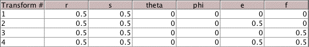

| T3(x, y) = (x/2, y/2) + (0, 1/2) | T4(x, y) = (x/2, y/2) + (1/2, 1/2) |
| T1(x, y) = (x/2, y/2) | T2(x, y) = (x/2, y/2) + (1/2, 0) |
 |
|
| ||
| 123 | 312 | 124 |
| Exercise 1 uses the transformations | ||||||||||
| ||||||||||
| That is, the Affine Transformation table is | ||||||||||
|  | ||||||||||
| 1. Shade the regions with address 123, 312, and 124. | ||||||||||
| ||||||||||
| Here are the answers. |
Return to Address Lab Exercises.